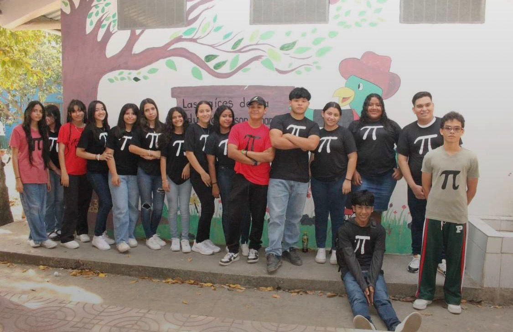

📌 Concepto de la carrera
La carrera de Ciencias y Humanidades es una formacion academica orientada al desarrollo integral del estudiante, brindandole conocimientos cientificos, matematicos, sociales y humanisticos que le permitan comprender el mundo desde diferentes perspectivas. Esta carrera tiene como objetivo preparar a los jovenes para continuar estudios universitarios y desarrollar habilidades intelectuales, criticas y analiticas.
A traves de esta formacion, el estudiante adquiere una base solida en areas como matematicas, ciencias naturales, español, ingles y ciencias sociales, fortaleciendo su capacidad de investigacion, razonamiento logico y comunicacion. Ademas, promueve valores humanos, responsabilidad y compromiso con la sociedad.
La carrera de Ciencias y Humanidades no se enfoca unicamente en el aprendizaje academico, sino tambien en el desarrollo personal del estudiante, ayudandolo a prepararse para enfrentar los retos educativos y profesionales del futuro.
La carrera de Ciencias y Humanidades es importante porque brinda una formacion academica amplia que permite al estudiante desarrollar conocimientos en distintas areas del saber. Ademas, prepara a los jovenes para continuar estudios superiores y comprender mejor los problemas cientificos, sociales y culturales de la sociedad.
Tambien ayuda a desarrollar habilidades intelectuales, pensamiento critico y capacidad de investigacion, aspectos fundamentales para el crecimiento profesional y personal.
El campo laboral de Ciencias y Humanidades esta relacionado principalmente con la continuacion de estudios universitarios, ya que esta carrera brinda una preparacion academica general. Sin embargo, el estudiante tambien puede desempeñarse en areas administrativas, educativas o de apoyo basico en diferentes instituciones.
La carrera de Ciencias y Humanidades es una excelente opcion para estudiantes que desean continuar estudios universitarios y desarrollar una formacion academica integral. A traves de esta carrera, los jovenes fortalecen sus conocimientos cientificos, sociales y humanisticos, preparandose para enfrentar los retos profesionales y personales del futuro.